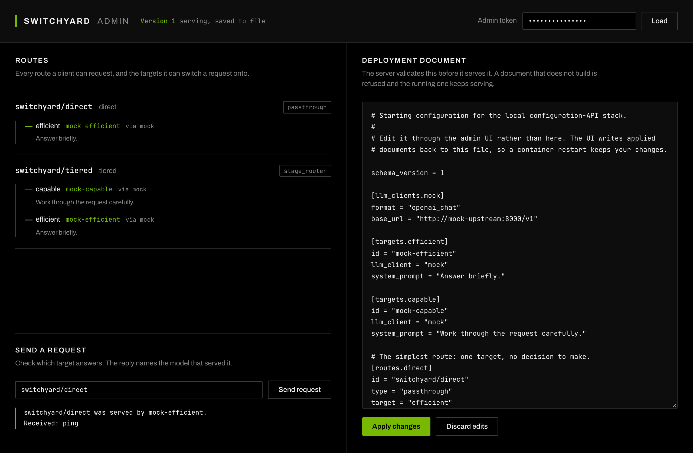

Configuration API¶
The server reads its TOML file once at startup. These endpoints let you read that document, replace it, and have the change take effect without a restart.
The document stays the unit of change. A replacement is parsed and built by the same code that loads the file, so the API accepts exactly what the file loader accepts, and the two cannot drift apart.
Enabling it¶
The API replaces model routing for every caller of the server, so it is off until you set a token.
switchyard-server --config switchyard.toml \
--admin-token "$(openssl rand -hex 32)" \
--admin-persist
--admin-token also reads SWITCHYARD_ADMIN_TOKEN. Without --admin-persist
an applied configuration lives only in memory, and the server returns to its
file on restart.
Every request carries the token:
A request without a valid token gets 401. Every request gets 404 when no
token is configured.
Endpoints¶
GET /v1/config¶
Returns the running document.
{
"version": 3,
"source": "schema_version = 1\n\n[llm_clients.openrouter]\n...",
"persisted": true
}
version counts applied configurations in this process. It starts at 1 and
increases by one on each apply. A restart starts the count again, so treat it as
a value to echo back rather than a revision number to store.
PUT /v1/config¶
Validates a document, then serves it.
source must be a complete document. Partial documents are rejected, because
routes are validated against targets and clients together.
expected_version is optional. Supply the version you read before editing and
the apply is refused with 409 when the running version has moved on, so two
callers editing at once cannot silently overwrite each other.
A document that does not build returns 400 with the parse or validation
error, and the server keeps serving the previous configuration.
GET /v1/config/routes¶
Describes what each route resolves to: the targets behind it, the model each target names, and any system prompt.
GET /v1/models lists the route names a client may request. This answers the
next question, which is what a route actually does.
{
"version": 3,
"routes": [
{
"route": "tiered",
"id": "switchyard/tiered",
"algorithm": "stage_router",
"prompt": null,
"targets": [
{
"target": "capable",
"model": "mock-capable",
"llm_client": "mock",
"system_prompt": "Work through the request carefully."
}
]
}
]
}
The description is read from the document rather than the built runner, because the document still holds target names, prompts, and algorithm settings in the shape an operator wrote them.
What an apply does to traffic¶
A request resolves the configuration once and keeps it for its whole lifetime. A request already in flight finishes on the configuration it started with, and the next request uses the new one. There is no window where a request sees half of each.
The runner and the credential redactor are replaced together. The redactor is built from the runner's provider keys, so replacing one without the other would let a key introduced by a new configuration reach logs and spans unredacted.
Routing statistics and Prometheus metrics are not reset by an apply. They accumulate across configuration versions.
Persistence¶
With --admin-persist an applied document is written to the --config path. A
temporary file is written beside it and renamed over the original, so a process
that stops midway cannot leave a half-written file for the next start to read.
That needs a writable directory, not just a writable file. Two common deployments do not give you one:
- A single-file bind mount in Docker. Mount the directory instead.
- A Kubernetes ConfigMap, which is read-only. Use a volume, or run without
--admin-persistand keep the document in your source of truth.
An apply that serves but cannot be written returns 500, and the body says
which happened:
{ "error": "configuration version 4 is serving but was not written to /config/switchyard.toml: Permission denied (os error 13)" }
The configuration is live at that point. Treating the 500 as a total failure
and retrying would apply it twice.
Trying it¶
examples/config-admin/ runs the server, a stub upstream, and the Switchyard
Admin console with docker compose up. See its README.

The console publishes as ghcr.io/inframaniacs/switchyard-admin-ui, built from
examples/config-admin/ui, so a cluster can run it beside the server rather
than only on a laptop.